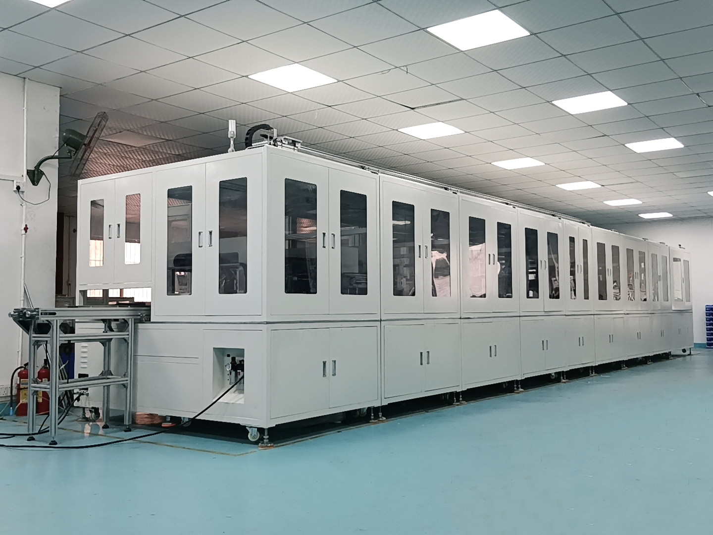

From Electric Motors to Automotive Electronics: How Automated Assembly Lines Are Transforming Manufacturing

Summary
The manufacturing landscape for electric motors and automotive electronics is undergoing a fundamental transformation driven by automation, electrification, and Industry 4.0 technologies. Automated assembly lines have evolved from simple conveyor-based systems into intelligent, data-driven production platforms capable of handling complex assemblies with micron-level precision. This article explores how automated assembly lines are reshaping motor and automotive electronics manufacturing, examines the market forces driving this transformation, and provides actionable insights for manufacturers planning automation investments. With the global automatic motor assembly line market valued at USD 5.22 billion in 2025 and projected to reach USD 7.56 billion by 2032, and the automotive smart factory market expected to grow from USD 50.6 billion in 2026 to USD 80.8 billion by 2031, the shift toward automated assembly is not just a trend—it is becoming a strategic imperative for manufacturers seeking to remain competitive.
Technology
- Automated assembly lines for motors and automotive electronics integrate multiple advanced technologies into cohesive production systems. The core technology stack includes precision robotics for component handling and assembly
- vision-guided systems for positioning and inspection
- and servo-driven presses and fastening tools for accurate joining operations. Inline testing stations perform electrical
- mechanical
- and functional verification at each production stage
- while manufacturing execution systems coordinate workflow and collect production data.
- Modern assembly lines increasingly incorporate artificial intelligence and machine learning for quality inspection
- using computer vision to detect defects that traditional rule-based systems would miss. Digital twin technology enables offline simulation and optimization of production processes before physical implementation. Internet of Things sensors provide real-time monitoring of equipment performance
- enabling predictive maintenance and reducing unplanned downtime. The integration of these technologies creates what industry analysts describe as "self-optimizing manufacturing workflows that autonomously adapt to product variation".
Challenge
Manufacturers of electric motors and automotive electronics face mounting pressure to increase production capacity while maintaining consistent quality and reducing costs. Traditional manual and semi-automated assembly methods are proving inadequate for several critical reasons.
Product complexity is rising rapidly. Higher-efficiency motor designs, tighter acoustic requirements, and greater thermal management needs have increased the number of critical quality characteristics that must be controlled during assembly. In automotive electronics, the trend toward miniaturization demands assembly precision that manual processes cannot consistently achieve.
Labor availability and cost present another significant challenge. Skilled assembly technicians are increasingly difficult to find and retain, while labor costs continue to rise across major manufacturing regions. The automotive industry's shift toward electric vehicles has intensified these pressures, as EV production requires new assembly processes for battery packs, electric motors, and power electronics.
Quality consistency remains a persistent issue in manual assembly. Human error in coil winding, component alignment, and fastening leads to variability that directly affects product performance. In safety-critical applications like electronic brake system motors, assembly deviations can compromise vehicle safety. Without comprehensive traceability, manufacturers struggle to identify root causes of defects or respond effectively to quality issues. These challenges are compounded by shorter product cycles and volatile supply conditions that demand greater manufacturing flexibility.
Solution
Automated assembly lines address these challenges by replacing manual processes with precision-controlled, data-driven production systems. The solution combines multiple automation modules into integrated production lines capable of handling the full assembly spectrum—from component feeding through final testing and packaging.
Precision assembly stations form the core of modern automated lines, using servo-driven positioning and torque-controlled fastening to achieve repeatable accuracy that manual operations cannot match. Vision inspection systems with high-resolution cameras and AI-assisted defect detection verify component presence, alignment, and dimensional accuracy at multiple points along the line. Inline testing stations perform electrical, mechanical, and functional verification, capturing pass-fail data for each product and enabling real-time quality feedback.
Automated material handling systems—including conveyors, feeders, and robotic transfer systems—ensure consistent component flow without manual intervention. Product traceability systems assign unique identification codes to each unit, creating complete production records from component feeding through final packaging. Software layers connect individual stations, capture process parameters, and apply analytics to reduce scrap and stabilize cycle times.
Modern lines are designed for flexibility, incorporating modular tooling and software-defined recipes that allow rapid switching between product variants. This modular architecture enables manufacturers to accommodate multiple motor topologies and varying inverter architectures without extensive retooling.
Workflow & Layout
Automated assembly lines for motors and automotive electronics follow a structured workflow designed to maximize throughput while maintaining quality. The production sequence begins with component feeding, where vibratory feeders and conveyor systems deliver parts to assembly stations with consistent timing and orientation.
Stator assembly stations perform precision placement of stators into motor housings, often incorporating laser welding for secure joining. Rotor assembly follows, with automated insertion and bearing press-fit operations. Advanced systems feature 3D vision positioning and guidance, automatic high-speed magnet installation, automatic injection of rotor cores, and automatic dual-position dynamic balance correction.
Final motor assembly includes end cap attachment and shaft alignment, followed by inline testing for electrical, insulation resistance, and mechanical performance. Vision inspection stations verify dimensional accuracy and surface quality. Labeling and marking systems apply traceability codes, and automated packaging lines handle cartoning, case packing, and palletizing.
The physical layout typically follows a linear flow with assembly stations arranged sequentially. Buffer zones between stations accommodate minor upstream interruptions without stopping the entire line. Each station is designed for accessibility, with dedicated service walkways for maintenance access.
Results & ROI
- Automated assembly lines deliver measurable improvements across multiple dimensions. Production throughput increases of 200–300% are commonly achieved through continuous
- high-speed operation. Labor requirements are typically reduced by 60–70%
- as automated processes replace repetitive manual tasks. Quality improves substantially
- with defect rates dropping from 3–5% to under 1% through precision automation and inline inspection.
- The economic case for automation is compelling. The Global Smart Assembly Line Automation Market is projected to grow from USD 18.4 billion in 2026 to USD 68.6 billion by 2034
- reflecting a 17.8% CAGR driven by EV manufacturing retooling and reshoring investment. Payback periods for automated assembly lines in motor and automotive electronics applications typically range from 12 to 24 months
- depending on line complexity and production volume.
- Quality-related cost savings are substantial. Automated inspection catches defects early
- reducing scrap and rework. Complete traceability enables rapid root cause analysis when issues do occur. Real-time production monitoring provides visibility into overall equipment effectiveness
- supporting data-driven continuous improvement. For automotive electronics manufacturers
- the ability to achieve zero parts-per-million defect rates through automated assembly is becoming a competitive necessity rather than an aspiration.
Equipment List
- The equipment configuration for automated motor and automotive electronics assembly lines varies by application
- but typically includes the following core components.
- Assembly Equipment:
- Servo presses with closed-loop force-displacement control
- Transducerized tightening systems with traceable data
- Automated screw feeding systems
- Precision dispensing systems for adhesives and coatings
- Robotic pick-and-place units for component handling
- Inspection and Testing:
- Vision inspection systems with AI-assisted defect detection
- Automated optical inspection (AOI) platforms
- 3D solder paste inspection systems
- In-circuit testing stations
- End-of-line functional testers
- Material Handling:
- Conveyor systems for product transport
- Vibratory bowl feeders for component supply
- Pallet-based transfer systems
- Software and Control:
- PLC and HMI systems for machine control
- MES software for production coordination
- SCADA systems for real-time monitoring
Project Overview / Opening
The transformation of motor and automotive electronics manufacturing through automated assembly lines represents one of the most significant shifts in modern industrial production. What was once a niche approach reserved for high-volume, standardized products has become a strategic manufacturing backbone across industries that depend on compact, efficient, and increasingly specialized electric motors.
The numbers tell the story. The automatic motor assembly line market was valued at USD 5.22 billion in 2025 and is projected to reach USD 7.56 billion by 2032. The automotive smart factory market will increase from USD 50.6 billion in 2026 to USD 80.8 billion in 2031. The automotive electronic manufacturing services market, valued at USD 147.14 billion in 2025, is expected to grow at a 10.84% CAGR through 2032.
This growth reflects a fundamental shift in manufacturing strategy. Producers face the same central mandate across mobility, industrial drives, home appliances, medical devices, and robotics: deliver consistent performance at scale while navigating tighter tolerances, shorter product cycles, and volatile supply conditions. Assembly automation is no longer limited to simple screwdriving and press-fit stations. It now integrates precision winding, in-line metrology, vision-guided handling, laser processing, and closed-loop testing.
Key Points
- Market Growth: Automatic motor assembly line market projected to grow from USD 5.22 billion (2025) to USD 7.56 billion (2032)
- Smart Factory Expansion: Automotive smart factory market expected to reach USD 80.8 billion by 2031
- EV Manufacturing Driver: Global electric vehicle platform transitions require extensive assembly line retooling
- Technology Integration: Modern lines combine robotics, AI vision, IoT sensors, and digital twin simulation
- Flexibility Priority: Manufacturers favor reconfigurable systems built around standardized work modules
- Data-Centric Operations: Software layers coordinate stations, capture process parameters, and apply analytics
- Reshoring Investment: North American and European manufacturing reshoring creating greenfield smart assembly facilities
- Quality Improvement: Automated inspection enables defect rates below 1% and supports zero-defect manufacturing goals
Implementation / Workflow
Successful implementation of automated assembly lines follows a structured process. The workflow typically encompasses six phases, with implementation timelines ranging from 12 to 24 months for comprehensive deployments.
Phase 1: Requirement Definition. Manufacturers define production capacity targets, quality standards, product variants, and traceability requirements. This phase establishes the foundation for system design and equipment selection.
Phase 2: System Design. The production line layout and workflow sequence are designed based on product specifications and throughput targets. Equipment specifications are developed, and interfaces between assembly, testing, and packaging modules are defined.
Phase 3: Equipment Integration. Automation equipment is procured and integrated into the production line. PLC, HMI, and MES connectivity are configured. Production control software is developed and tested.
Phase 4: Commissioning and Testing. The full production line is installed and commissioned. Dry runs and production trials validate system performance. Parameters are fine-tuned for optimal operation.
Phase 5: Production Ramp-Up. Operators and maintenance personnel receive training. Initial production is monitored for quality and throughput. Processes are optimized based on real production data.
Phase 6: Handover and Support. Operational documentation and procedures are transferred. Ongoing technical support and maintenance guidance are provided. Cross-functional alignment across engineering, production, and supply chain teams is essential to capture the efficiency and quality benefits.
Customer Value / Results
The value of automated assembly lines extends across operational and strategic dimensions. In operational efficiency, automation transforms assembly from a labor-intensive constraint into a seamless production process. Throughput increases of 200–300% are common. The elimination of manual handling reduces variability and improves workflow consistency.
Quality improvement is among the most significant benefits. Automated processes with inline inspection reduce defect rates from 3–5% to under 1%. Vision systems detect defects that human inspectors would miss. Consistent application of assembly parameters ensures every product meets specifications. In automotive electronics, where reliability is paramount, this quality consistency directly translates to fewer warranty claims and higher customer satisfaction.
Cost reduction is substantial and measurable. Labor savings of 60–70% reduce the cost per unit assembled. Lower defect rates reduce scrap and rework. Real-time production monitoring enables predictive maintenance, reducing unplanned downtime. Complete traceability supports rapid root cause analysis and continuous improvement.
Strategic benefits position manufacturers for long-term success. Scalability improves as production volume can increase without proportional increases in labor. Flexibility enables rapid response to changing product requirements. The data collected supports ongoing process optimization. For manufacturers serving the automotive sector, the ability to demonstrate Industry 4.0 capabilities is increasingly important for securing contracts with major OEMs.
Conclusion / Next Step
The transformation from manual to automated assembly in motor and automotive electronics manufacturing is well underway and accelerating. Market data confirms the trend: the automatic motor assembly line market is growing at a 5.44% CAGR, smart assembly line automation at 17.8% CAGR, and automotive smart factories at 9.8% CAGR. These growth rates reflect a fundamental recognition among manufacturers that automation is not optional—it is essential for competitiveness.
The shift from electric motors to automotive electronics and beyond represents a broader transformation of manufacturing itself. Assembly lines are evolving from fixed, single-purpose systems into modular, data-centric production platforms capable of adapting to rapid design changes. AI, computer vision, collaborative robotics, and digital twins are becoming standard components of modern assembly operations.
For manufacturers evaluating automation investments, the path forward is clear. Start by assessing your current production processes to identify bottlenecks, quality issues, and labor-intensive operations. Define clear automation goals for throughput, quality, and cost reduction. Engage with experienced automation partners who understand both the technical requirements and the industry-specific challenges of motor and automotive electronics assembly.
If you are planning a factory automation upgrade for motor assembly, automotive electronics production, or related manufacturing applications, 13ASRS can help evaluate your project, design the solution, and estimate the investment required. Visit https://13asrs.com/ or subscribe to @13machine on YouTube for smart factory projects, automated production lines, and industrial automation case studies.
SEO Title
Automated Assembly Lines for Motors & Automotive Electronics | Smart Manufacturing Guide | 13ASRS
SEO Description
Discover how automated assembly lines are transforming electric motor and automotive electronics manufacturing. Market trends, key technologies, and real-world case studies. Learn about Industry 4.0 integration and automation ROI.
SEO Keywords
- automated assembly line
- electric motor assembly
- automotive electronics manufacturing
- smart factory automation
- motor assembly line
- Industry 4.0 manufacturing
- automotive assembly automation
- electric vehicle motor assembly
- precision assembly automation
- manufacturing digitalization
- assembly line automation
- automotive smart factory
- motor production automation
- electronics assembly automation
- industrial robotics assembly
Related Blog
Start with Your Business Challenge
Tell us about your warehouse, factory, or production requirements. We'll help you explore practical automation solutions and relevant project references.